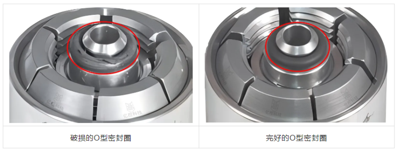
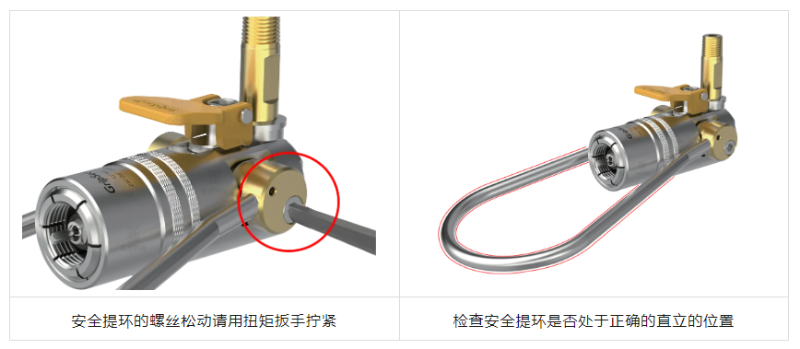
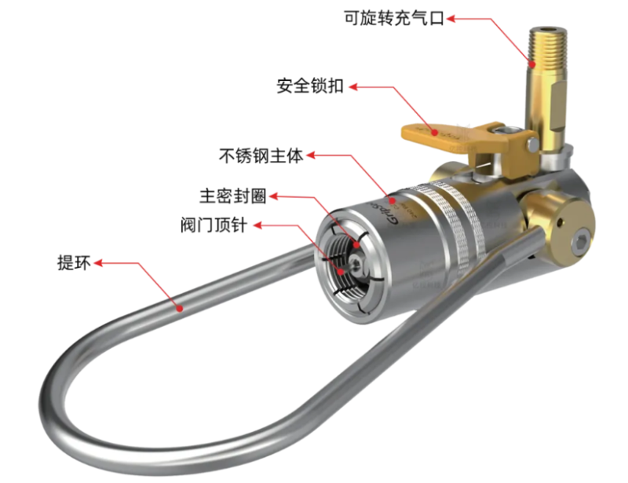

建立日检、周检与定期检查
Inspection气体充装连接器长期用于压缩气体的快速充装和压缩气瓶的气密性检测，需要定期维护才能为每次充装提供可靠连接。下列准则适用于全部充注接头。
建议操作人员进行日常、每周和定期检查，内容应覆盖接头磨损、本体损坏、气密性、操作方便性、润滑是否充足、污垢积累与损伤。非专业人士不要随意拆卸连接器。
密封件：每 2000 次更换，每天目视
Seals
建议主 O 形圈密封件至少每 2000 次更换一次；每天对密封圈表面做目视检查，若发现撕裂或裂纹即更换新的 O 形圈。部分应用工况需要更频繁地更换密封件。
密封圈是充装接头最主要的易损件，把更换周期写进工位点检表，比出现泄漏后再停机排查更划算。
顶芯与安全提环
Ejector & Ring
针对带顶芯的连接器，建议每天使用前检查顶芯是否正常、有无弯曲变形；若弯曲损坏，请联系厂家购买原厂配件更换。
定期检查安全提环：发现螺丝松动可适当拧紧，但注意不要拧得过紧；同时确认安全提环处于正确位置，位置不对时可参照故障排除指南调整，仍无法解决则交由厂家检修。
安全锁扣：必须卸压后才能解锁
Safety Lock
建议每天检查安全锁扣。使用提环式气体充装连接器时，安全锁扣会在释放安全提环时自动落锁，只有当连接器卸压后才能按压锁扣解锁。切勿试图在未卸压的情况下断开连接器，否则可能损坏连接器或造成人身与财产安全问题。